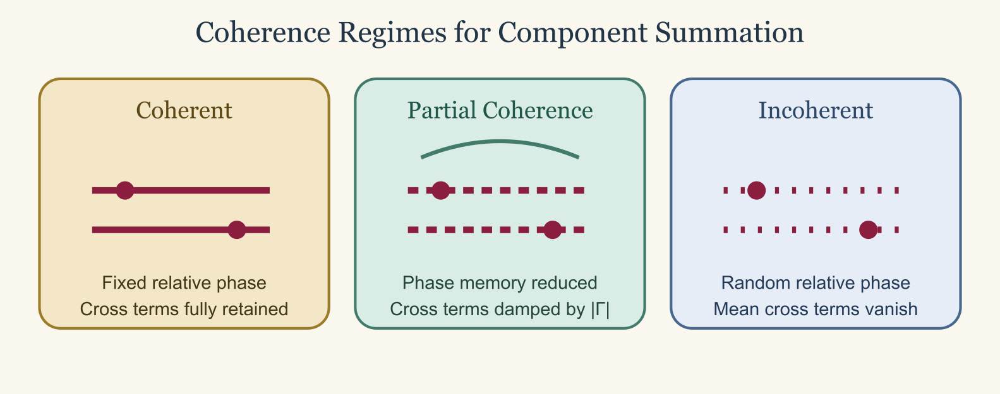

Combining Scattering Components
Source:vignettes/combining-components/combining-components.Rmd
combining-components.RmdThe combination problem
Composite biological targets may contain regions with different geometry and material response. Fish bodies and gas-filled inclusions are a common example (Clay and Horne 1994; Gorska et al. 2005). Running a separate canonical model for each region does not, by itself, produce a model of the combined target. A component-wise approximation must address phase, position, coherence, shadowing, and mutual scattering.
The first question is therefore not which outputs to add. It is whether the isolated component solutions can represent weakly interacting contributions to one scattering problem.
Amplitude and cross-section
Suppose two subscatterers have complex backscattering amplitudes f_1 and f_2. If both are first-order contributions in a common incident field, their combined amplitude is approximately:
f_{\mathrm{tot}} \approx f_1 + f_2.
The backscattering cross-section is then:
\sigma_{\mathrm{bs,tot}} = |f_{\mathrm{tot}}|^2 = |f_1|^2 + |f_2|^2 + 2\operatorname{Re}(f_1 f_2^*).
The final term is interference. It is lost if cross-sections are
added before the coherence assumption has been established. Target
strengths cannot be added because TS is a logarithmic
report of cross-section, not a wave quantity.
Coherence regimes
Coherent sum
Use a coherent sum when relative phase is defined and remains stable for the prediction. For N components, place every amplitude in the same phase reference before summing (Morse and Ingard 1968):
f_{\mathrm{tot}} = \sum_{j=1}^{N} f_j e^{i\phi_j},
where \phi_j includes the translation and orientation adjustments required by the common coordinate system. The cross-section is:
\sigma_{\mathrm{bs,tot}} = \left|\sum_{j=1}^{N} f_j e^{i\phi_j}\right|^2.
Expanding it retains every cross term:
\sigma_{\mathrm{bs,tot}} = \sum_{j=1}^{N}|f_j|^2 + \sum_{j\ne\ell} f_j f_\ell^* e^{i(\phi_j-\phi_\ell)}.
This description applies to a fixed target only when component locations and orientations are known, their amplitude conventions are compatible, and mutual interaction is weak enough to neglect.
Incoherent sum
An incoherent sum describes an ensemble in which relative phases vary enough that the mean cross terms vanish. The assumption is:
\left\langle f_j f_\ell^* e^{i(\phi_j-\phi_\ell)} \right\rangle \approx 0 \qquad (j\ne\ell).
The ensemble-mean cross-section then becomes:
\left\langle\sigma_{\mathrm{bs,tot}}\right\rangle \approx \sum_{j=1}^{N}\left\langle|f_j|^2\right\rangle.
Waves still interfere in each realization. The statement is only that random posture, uncertain spacing, roughness, or another defined averaging process removes the interference terms from the reported mean. Incoherent addition is not a fallback chosen merely because phase was unavailable.
Partial coherence
Many targets lie between the coherent and incoherent limits. Represent an effective degree of coherence by \Gamma_{j\ell}:
\left\langle\sigma_{\mathrm{bs,tot}}\right\rangle = \sum_{j=1}^{N}\left\langle|f_j|^2\right\rangle + \sum_{j\ne\ell} \left\langle f_j f_\ell^*\Gamma_{j\ell}\right\rangle.
The limiting cases are:
|\Gamma_{j\ell}|=1 \quad\text{for full coherence}, \qquad \Gamma_{j\ell}=0 \quad\text{for full incoherence}.

A partial-coherence model must define how \Gamma_{j\ell} follows from the posture, displacement, roughness, or sampling distribution. Treating it as an unconstrained fitting factor gives little physical support to the result.
Coordinate and phase requirements
Equal units are not enough for coherent addition. The component results must use the same incident-wave convention, origin, orientation, exterior medium, and far-field amplitude normalization. A translation changes the phase even when it does not change an isolated component’s cross-section.
For monostatic backscatter with component positions \mathbf r_j, a simple first-order translation has the form:
f_{\mathrm{tot}} \approx f_1 e^{2ik\hat{\mathbf k}\cdot\mathbf r_1} + f_2 e^{2ik\hat{\mathbf k}\cdot\mathbf r_2}.
The sign of this phase factor depends on the time, incident-wave, and
amplitude conventions. It must be derived from the conventions shared by
the component models rather than copied without checking. If a model
reports only TS or sigma_bs, its complex phase
cannot be reconstructed from that scalar output.
Multiple scattering and coupled geometry
The isolated-component sum assumes that each component is illuminated by the external incident field. If one component modifies the field at another, rescattering terms enter the total field (Morse and Ingard 1968):
p_{\mathrm{tot}} = p_{\mathrm{inc}} + p_{\mathrm{scat},1} + p_{\mathrm{scat},2} + p_{12} + p_{21} + \cdots.
Those terms are absent from the two isolated calculations. The approximation also weakens when components touch, overlap, are embedded, strongly shadow one another, or materially alter each other’s boundary. The physical target is then a coupled boundary-value problem, not two canonical solutions joined after the fact.
Compatibility of approximations matters as well. A weak-scattering
volume model and a high-frequency specular model may each be useful in
its own regime, yet their amplitudes need not form terms in one
consistent expansion. Composite models such as KRM combine
components within a shared formulation. That is different from adding
unrelated final outputs.
Working with package output
Retrieve each result table with
extract(object, "model"). Before any combination, check
whether it contains a complex f_bs and whether the model’s
documentation defines a phase convention compatible with the other
component. The presence of a column named f_bs does not
establish compatibility by itself.
When an incoherent ensemble sum has been physically justified, convert reported target strengths to cross-sections, add in the linear domain, and convert the result back to decibels:
sigma_total <- acousticTS::linear(TS_component_1) +
acousticTS::linear(TS_component_2)
TS_incoherent <- acousticTS::db(sigma_total)This code is algebraically correct for the stated incoherent mean. It does not justify the incoherence assumption. For coherent addition, preserve complex amplitudes through translation and summation, then form the result:
f_total <- f_component_1 * exp(1i * phase_1) +
f_component_2 * exp(1i * phase_2)
sigma_total <- Mod(f_total)^2
TS_coherent <- acousticTS::db(sigma_total)acousticTS does not automatically certify phase
compatibility or account for multiple scattering between outputs from
separate models. Those are properties of the proposed physical
approximation and must be demonstrated by its author.
Example decision: cylinder and sphere
Consider a fluid-like finite cylinder calculated with
FCMS and a gas-filled sphere calculated with
SPHMS. A first-order coherent approximation may be useful
when the components are physically separate, sufficiently far apart for
mutual scattering and shadowing to be weak, expressed in the same
exterior medium and coordinate system, and available as compatible
complex amplitudes with the required translation phases.
If the sphere is attached to or embedded in the cylinder, those conditions are unlikely to hold. A coupled model or full-wave boundary-element, finite-element, or transition-matrix treatment is then more appropriate. An incoherent sum may still describe a clearly defined randomized ensemble, but it is not the exact response of a fixed composite target.
Decision checklist
Before reporting a combined result, document:
- whether the target is a fixed realization or an ensemble average,
- whether components are separate enough to neglect coupling and shadowing,
- which amplitude, phase, coordinate, and exterior-medium conventions are shared,
- how component translations and orientations enter the phase,
- why cross terms are retained, damped, or averaged away,
- whether the component approximations are physically compatible, and
- how the composite approximation was checked against a coupled solution, limiting case, or independent result.
If only TS is available, deterministic coherent
combination is not possible. If cross-sections are added, label the
result as an incoherent ensemble approximation and state the averaging
argument that removes the cross terms.